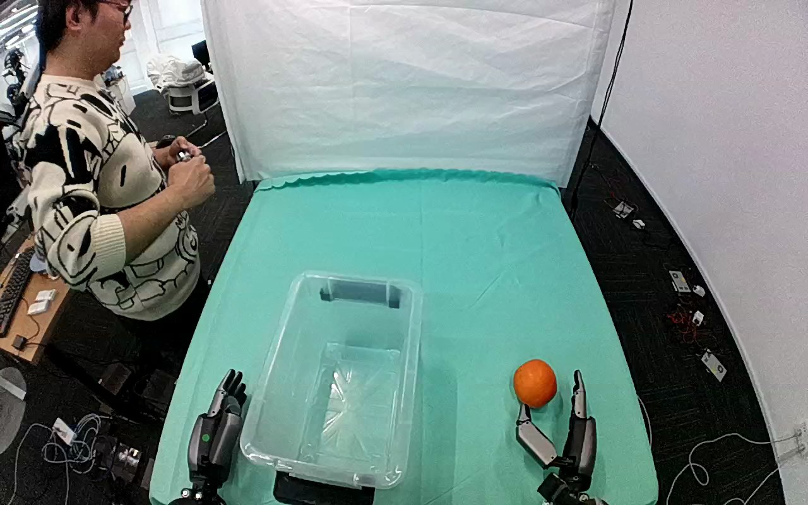

ActionNet · 01JGJS4GWCL7A5XCXC
01jgjs4gwcl7a5xcxc

Visual review action_review.json
{
"dataset": "ActionNet",
"episode_id": "01JGJS4GWCL7A5XCXC",
"prompt_protocol": "humanoid_action_v1",
"prompt_provenance": "visually_authored_from_video_and_initial_frame",
"review_scope": "One dedicated agent reviewed the complete unchanged 404-frame top/rgb.mp4 and the generation first frame. Full single-task sequence retained.",
"source_video": "../../original/top/rgb.mp4",
"conditioning_first_frame": "../first_frame.png",
"generation_video": "../video.mp4",
"action_prompt": "../actiongeneration_prompt.txt",
"source_frame_start": 0,
"source_frame_end_exclusive": 404,
"fps_rational": "30/1",
"resolution": [
1280,
800
],
"source_annotation": {
"verbatim_task_prompt": "Pick up the orange from the table and place it in the container.",
"task_prompt_path": "../../original/task_prompt.txt"
},
"anatomical_side_evidence": {
"active_arm": "hand entering from the lower-right edge of the initial image",
"initial_frame_evidence": "Two robot arms enter from the near lower image edge. The hand attached to the lower-right arm sits beside the orange at frame 0 and is the only hand that moves. The lower-left arm stands upright beside the container with fingers raised and stays still. Torso and shoulders are outside the image, and camera pose or mirroring relative to the robot body is not established.",
"confidence": "Visible-arm identity is unambiguous; anatomical left/right is not independently established."
},
"arm_roles": {
"lower_right_visible_arm": "Sole manipulating hand: approaches the orange, closes thumb (image-left side) and fingers around opposing sides of it, bears its weight during lift and transport, lowers it into the container, opens to release, withdraws and returns to a raised rest posture at the lower right.",
"lower_left_visible_arm": "Remains stationary beside the container's lower-left corner with fingers raised for the whole clip; no contact with the orange or container."
},
"coordination": "Single-hand pick and place. No hand-to-hand transfer or bimanual stabilization. A person stands at the left edge holding a handheld device and moves slightly in and out of view; they do not touch the robot, orange or container.",
"chronology": [
{
"frames": [
0,
89
],
"observation": "Orange lies on the teal cloth right of the empty transparent plastic container. The lower-right hand is beside it with the thumb to its lower left and fingers raised. It shifts slowly toward the orange; the lower-left hand is still. The person is initially visible at the left, partly leaves the field of view and returns."
},
{
"frames": [
90,
139
],
"observation": "The hand opens around the orange. At frame 110 the thumb is below-left and the fingers on the right side of the orange with an open gap. By frame 130 thumb and fingers touch opposing sides; the orange is still on the table."
},
{
"frames": [
140,
200
],
"observation": "The hand holds the orange and raises it off the table. Frame 160 shows it clearly lifted above the cloth. By frame 200 it is carried up and left toward the container, held between the thumb below and the fingers on top. No regrasp is visible."
},
{
"frames": [
201,
250
],
"observation": "The held orange is carried left over the container's right rim and lowered inside. At frame 250 it is just inside the container above the floor with the hand and wrist still above the rim."
},
{
"frames": [
251,
266
],
"observation": "The hand lowers the orange further and releases it. Frame 258 still shows finger and thumb contact on the orange. By frame 266 the orange rests low in the container and the thumb remains near its lower edge. The exact release frame is partly occluded by the hand."
},
{
"frames": [
267,
310
],
"observation": "The hand opens fully and lifts out of the container, pointing upward at the right of the container."
},
{
"frames": [
311,
403
],
"observation": "The hand moves back to a raised rest posture beside the table at the lower right. The orange remains on the container floor through final frame 403. The person at the left appears surprised but does not interact. No further manipulation follows."
}
],
"observed_outcome": {
"status": "successful_visible_placement",
"description": "The orange is lifted from the tabletop, carried into the transparent plastic container and released onto its floor, where it remains while the hand withdraws.",
"selected_action_outcome": "successful_visible_placement",
"source_overall_success_label": "not used to infer outcome"
},
"source_annotation_discrepancies": [
"The source says to place the orange in the container; the observed target is a transparent plastic storage bin, consistent with the instruction.",
"The source gives no side or arm information; the prompt uses the visible hand entering from the lower-right edge."
],
"uncertainties": [
"Torso and shoulder attachment are outside the image, and camera pose or mirroring is not independently established. Anatomical left/right is uncertain; the prompt uses the unambiguous hand entering from the lower-right edge.",
"The exact first table-separation and release frames are bracketed rather than isolated because of hand and orange occlusion; chronology intervals bracket visible transitions.",
"The top camera is mounted on the robot and shows slight apparent motion in some segments; the fixed-camera generation constraint is retained verbatim.",
"Whether the orange is real fruit or a prop cannot be established visually."
],
"inspection_coverage": {
"total_decoded_frames": 404,
"overview_frame_indices": {
"start": 0,
"stop_inclusive": 402,
"step": 2,
"count": 202
},
"overview_method": "Decoded RGB every second frame into seventeen temporary 4-by-3 contact sheets outside dataset folders; reviewed all sheets.",
"native_resolution_frames": [
0,
90,
110,
130,
160,
200,
250,
258,
266,
403
],
"native_resolution": [
1280,
800
],
"initial_png_inspected_after_full_sequence": true,
"temporary_evidence_location": "/tmp/an_review_01JGJS4GWCL7A5XCXC (removed after review; not under generation input)",
"retained_evidence_frame_directories": false
},
"preservation": {
"whole_original_single_task_clip_retained": true,
"crop": false,
"shorten": false,
"resize": false,
"reencode": false,
"source_and_generation_sha256_equal": true
},
"prompt_word_count": 78
}